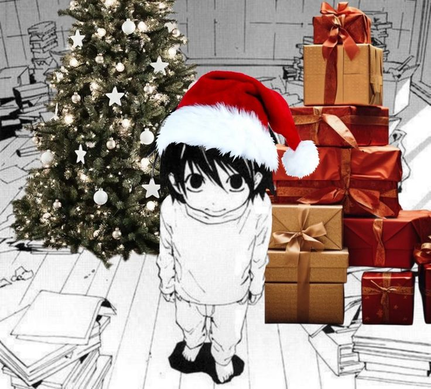

Shiro
winter, quiet music, and good company
A little about me
Hello, and welcome. I’m Shiro, a thoughtful and somewhat introverted person with a genuine appreciation for creativity, music, and quiet evenings. I tend to be reserved at first, but I’m remarkably loyal once I trust someone, and I take considerable pride in doing things carefully and well.
Winter is my favourite season: the soft snowfall, the warm lights, and the peculiar stillness that settles over everything. I enjoy discovering new music, making content, and sharing it with an enthusiastic community. Feel free to explore, join my Discord server, and follow me on the platforms above.